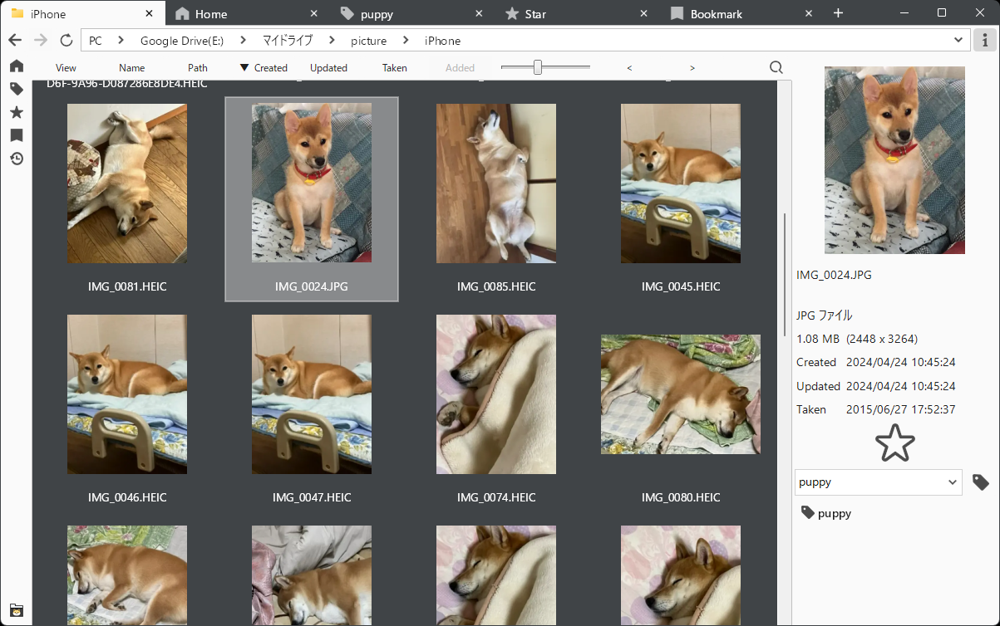

GPUを使用した高速な描画
表示の引っかかりを抑え、快適な閲覧ができます。
Windows 10/11 対応
PicSum は、GPUによる超高速描画と徹底的にチューニングされた0.2秒を切る高速起動、そして Google Chrome と遜色ない直感的なタブ操作を兼ね備えた 画像ビューアです。 圧倒的なスピードと馴染みのある操作性で、画像閲覧のストレスをゼロにします。

表示の引っかかりを抑え、快適な閲覧ができます。
徹底的にチューニングし、起動から切り替えまでをスムーズにします。
2ページ/2枚を並べて表示でき、比較やレイアウト確認にも便利です。
複数フォルダ/ビューをタブで切り替え、作業を中断しません。
エクスプローラーのように階層を辿れて、目的の場所へ素早く移動できます。
よく開くフォルダの一覧、フォルダの閲覧履歴などからすぐに開けます。
タグによる分類で、ファイル整理や後からの検索に役立ちます。
画像ファイルを 'Avif', 'Gif', 'Jpg', 'Png', 'Webp' に変換することができます。
次の形式に対応しています。
タブ上でミドルクリックタブ上でマウスホイールファイルリストの項目をミドルクリックアドレスバーの項目をミドルクリックホームボタンをミドルクリックスターボタンをミドルクリックブックマークボタンをミドルクリック履歴ボタンをミドルクリックタグ一覧でタグをミドルクリックサイドボタンControl + WControl + TControl + NShift + GGGControl + TabControl + Shift + TabAlt + 左矢印Alt + 右矢印Control + R / F5PicSum は Microsoft Store で配布しています。
ストアの表示は環境により言語やボタン表示が異なる場合があります。